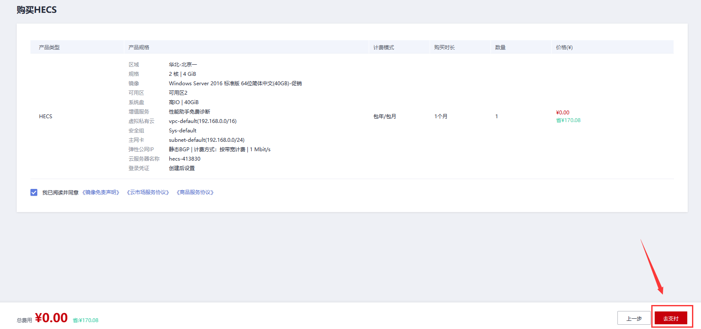
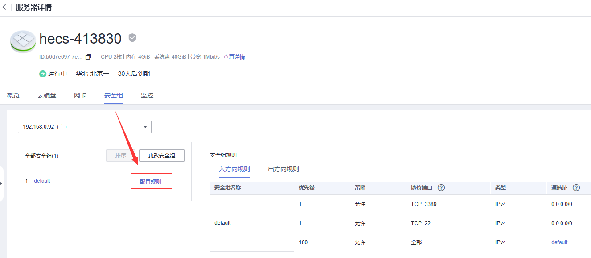
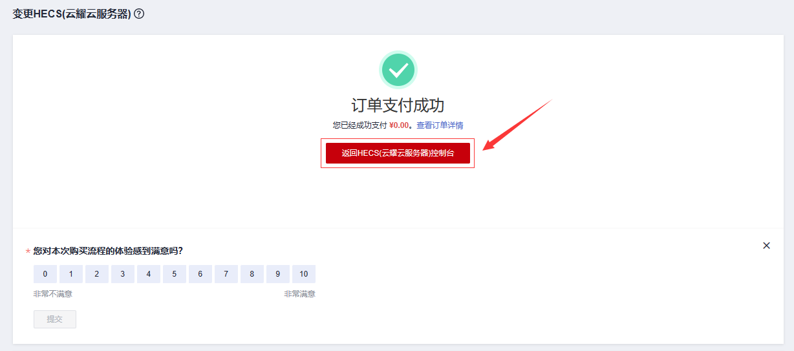

华为云服务器使用教程
华为云服务器使用教程一、华为云账号注册二、华为云服务器购买三、华为云服务器使用1、进入云服务器控制台2、重置密码3、远程登录3.1 方式一：浏览器远程登录3.2 方式二：Windows桌面远程连接四、华为云服务器使用Windows Server 2016部署项目1、远程连接服务器，准备环境资料2、安装、配置环境3、部署数据库及项目（方式一）3.1 部署数据库3.2 部署项目3.2.1 导入项目3.2.2 运行项目3.2.3 访问项目4、部署数据库及项目（方式二）4.1 部署数据库4.2 部署项目4.2.1 准备工作4.2.2 上传项目4.2.3 启动服务4.2.4 访问项目五、华为云服务器使用 CentOS 7.9 + 宝塔面板部署项目1、重装系统2、安装宝塔面板2.1 登录 Cent OS 系统2.2 安装宝塔面板3、登录宝塔面板3.1 设置安全组放行宝塔面板登录端口号3.2 登录宝塔面板4、安装环境4.1 安装 Apache4.2 安装 JDK 和 Tomcat4.3 安装MySQL5、部署数据库及项目（方式一）5.1 部署数据库5.2 部署JAVA项目5.3 访问项目6、部署数据库及项目（方式二）6.1 部署数据库6.2 部署JAVA项目6.2.1 准备工作6.2.2 上传项目6.2.3 访问项目六、华为云服务器使用 CentOS 7.9部署项目1、重装系统2、安装环境2.1 安装MySQL安装前准备2.1.1 下载安装包2.1.2 将安装包上传至服务器2.1.3 安装MySQL服务2.1.4 查看MySQL服务状态 & 启动MySQL服务 & 设置MySQL服务开机自启动2.1.5 登录MySQL2.1.6 设置root用户允许远程连接MySQL数据库2.2 安装JDK安装前准备2.3.1 下载jdk2.3.2 安装jdk2.3.3 配置jdk2.3 安装Tomcat2.3.1 下载Tomcat2.3.2 安装Tomcat2.3.3 启动Tomcat服务2.3.4 设置端口号（8080）通过云服务器防火墙2.3.5 测试Tomcat是否安装成功3、部署数据库及项目3.1 部署数据库3.2 部署JAVA项目3.2.1 准备工作3.2.2 上传项目并解压3.2.3 访问项目
一、华为云账号注册
网址：https://activity.huaweicloud.com/
二、华为云服务器购买
设置初始化系统为：Windows Server 2016 标准版 64位简体中文，后期根据情况自行调整

三、华为云服务器使用
1、进入云服务器控制台
2、重置密码
3、远程登录
3.1 方式一：浏览器远程登录
3.2 方式二：Windows桌面远程连接

四、华为云服务器使用Windows Server 2016部署项目
1、远程连接服务器，准备环境资料
下载对应工具放入云服务器：（和使用自己的电脑一致）
方式1：从本机使用
Ctrl + C和Ctrl + V复制到云服务器方式2：在云服务器浏览器中访问官网下载
部署
JavaWeb项目需要准备的环境：
jdk 1.8
Tomcat 8.5
MySQL 5.7
Navicat（
非必须）Eclipse（
非必须）
2、安装、配置环境
特别说明：按照规范配置
JDK的环境变量和MySQL环境变量
参考教程：Java方向编程环境下载&安装&配置教程
3、部署数据库及项目（方式一）
在云服务器上安装
Navicat部署数据库，安装Eclipse部署项目
3.1 部署数据库
使用
Navicat创建数据库，执行准备好的数据库脚本创建表并导入数据
3.2 部署项目
将准备好的项目导入
Eclipse，并将部署到Tomcat服务器上，启动Tomcat服务器
简单来说，就是导入项目并运行
3.2.1 导入项目
3.2.2 运行项目
3.2.3 访问项目
在服务器上使用如下地址就可以访问项目：
http://localhost:8080/项目名/请求名如果需要在其他设备访问，就需要将本地地址 localhost 换为 服务器公网IP：
xxxxxxxxxxhttp://服务器公网ip:8080/项目名/请求名最后还需要在服务器安全组中添加Web服务的 8080 端口通过：

4、部署数据库及项目（方式二）
在
本地远程访问云服务器数据库并完成部署，将项目直接部署到Tomcat上
与方式一的区别：不需要安装 Navicat 和 Eclipse
4.1 部署数据库
在本地使用
公网IP连接云服务器数据库，并创建数据库，执行准备好的数据库脚本创建表、导入数据
连接云服务器数据库之前需要做如下准备工作：
在服务器安全组放开MySQL服务端口号
3306授权所有用户可以访问云服务器的MySQL服务的root用户【在云服务器上操作】
授权
xxxxxxxxxxGRANT ALL PRIVILEGES ON *.* TO 'root'@'%'IDENTIFIED BY '数据库密码' WITH GRANT OPTION;刷新权限
xxxxxxxxxxFLUSH PRIVILEGES;
本地连接数据库
4.2 部署项目
4.2.1 准备工作
将本地项目导出为
war包，备用
4.2.2 上传项目
将 war 包复制到云服务器的 Tomcat 安装路径的
webapps中并解压，解压之后即可将 war 包删除
4.2.3 启动服务
在云服务器的 Tomcat 安装路径的
bin中启动 MySQL 服务（注意：DOS命令窗口不能关闭）
4.2.4 访问项目
在服务器上使用如下地址就可以访问项目：
xxxxxxxxxxhttp://localhost:8080/项目名/请求名如果需要在其他设备访问，就需要将本地地址 localhost 换为 服务器公网IP：
xxxxxxxxxxhttp://服务器公网ip:8080/项目名/请求名最后还需要在服务器安全组中添加Web服务的 8080 端口通过：（端口号不要重复添加）
五、华为云服务器使用 CentOS 7.9 + 宝塔面板部署项目
1、重装系统

2、安装宝塔面板
2.1 登录 Cent OS 系统
登录方式：
云服务器直接远程登录
第三方工具登录（Xshell、FinalShell等）
2.2 安装宝塔面板
宝塔官网：https://www.bt.cn/new/index.html
Cent OS安装脚本：
xxxxxxxxxxyum install -y wget && wget -O install.sh https://download.bt.cn/install/install_6.0.sh && sh install.sh ed8484bec
将如上命令复制到 FinalShell 控制台执行即可：（出现验证，填写 y 即可）
安装结束之后得到宝塔面板登录信息：（保存登录信息）
x
外网面板地址: https://公网ip:24614/2a5add76内网面板地址: https://私有ip:24614/2a5add76username: xxxxxxxxpassword: xxxxxxxx3、登录宝塔面板
3.1 设置安全组放行宝塔面板登录端口号
此文档演示地址为：https://公网ip:24614/2a5add76，端口号为：
24614
3.2 登录宝塔面板
4、安装环境
4.1 安装 Apache
4.2 安装 JDK 和 Tomcat
Tomcat 的安装目录和端口如下：
Tomcat7 安装目录在
/usr/local/bttomcat/tomcat7端口号8231Tomcat8 安装目录
/usr/local/bttomcat/tomcat8端口号8232Tomcat9 安装目录
/usr/local/bttomcat/tomcat9端口号8233
4.3 安装MySQL
5、部署数据库及项目（方式一）
5.1 部署数据库
设置安全组放行 3306端口：
华为云服务器：
宝塔面板：
宝塔面板创建数据库：
使用 Navicat 远程连接数据库并导入数据表：
5.2 部署JAVA项目
添加 JAVA 项目：
在项目路径下导入项目（war包）并解压：
5.3 访问项目
网站访问端口号为：8232
华为云服务器放行
8232端口：宝塔面板放行
8232端口：访问项目使用如下地址：
xxxxxxxxxxhttp://公网ip:8232
6、部署数据库及项目（方式二）
6.1 部署数据库
设置安全组放行 3306端口：
华为云服务器：
宝塔面板：
宝塔面板创建数据库：
使用 Navicat 远程连接数据库并导入数据表：
6.2 部署JAVA项目
将项目上传到 Tomcat 安装目录的 webapps 中即可
Tomcat 的安装目录和端口如下：
Tomcat7 安装目录在
/usr/local/bttomcat/tomcat7端口号8231Tomcat8 安装目录
/usr/local/bttomcat/tomcat8端口号8232Tomcat9 安装目录
/usr/local/bttomcat/tomcat9端口号8233
【本演示以 Tomcat 8 为例】
6.2.1 准备工作
将本地项目导出为
war包，备用
6.2.2 上传项目
在云服务器的 Tomcat 安装路径的
webapps中创建文件夹，文件夹一般以项目名命名，并将 war 包复制到云文件夹中并解压，解压之后即可将 war 包删除
6.2.3 访问项目
在服务器和宝塔面板的
安全组中添加Tomcat 8服务的8232端口通过：（端口号不要重复添加）使用如下地址即可访问项目：
xxxxxxxxxxhttp://服务器公网ip:8080/项目名/请求名
六、华为云服务器使用 CentOS 7.9部署项目
1、重装系统
2、安装环境
2.1 安装MySQL
安装前准备
安装MySQL服务之前，需要检查服务器上是否已经安装了MySQL服务。
查看是否安装了MySQL服务（依赖文件）
xxxxxxxxxx# rpm -qa | grep mysql卸载已经安装的MySQL依赖文件
xxxxxxxxxx# rpm -e --nodeps mysql依赖文件名2.1.1 下载安装包
下载后资源如下：
2.1.2 将安装包上传至服务器
使用rz将安装包上传至/usr/mysql中
xxxxxxxxxx# mkdir /usr/mysql# cd /usr/mysql# rz提示：如果出现找不到 sz 和 rz 命令，可以执行命令
yum install lrzsz进行下载
2.1.3 安装MySQL服务
rpm -ivh 安装包名称
注意点：安装顺序进行安装，前后有依赖关系。
xxxxxxxxxx# rpm -ivh mysql-community-common-5.7.38-1.el7.x86_64.rpm# rpm -ivh mysql-community-libs-5.7.38-1.el7.x86_64.rpm# rpm -ivh mysql-community-client-5.7.38-1.el7.x86_64.rpm# rpm -ivh mysql-community-server-5.7.38-1.el7.x86_64.rpm可能问题说明及解决：
问题1：安装顺序不正确
问题1解决方案：安装如下顺序进行安装
问题2：安装mysql-community-common时用冲突问题
问题2解决方案：卸载冲突的依赖文件
2.1.4 查看MySQL服务状态 & 启动MySQL服务 & 设置MySQL服务开机自启动
mysql服务为：mysqld
查看MySQL服务状态
xxxxxxxxxx# service mysqld status启动MySQL服务
xxxxxxxxxx# service mysqld start设置服务开机自启动
xxxxxxxxxx# systemctl enable mysqld2.1.5 登录MySQL
xxxxxxxxxx# mysql -u root -p可能问题说明及解决：
问题1：登录时无密码或密码不正确
问题1解决方案：
第一步：修改配置文件/etc/my.cnf，在[mysqld]下面添加：skip-grant-tables，并重启MySQL服务
xxxxxxxxxx# vim /etc/my.cnfxxxxxxxxxx# service mysqld restart第二步：使用无密码模式登录MySQL服务，并设置新密码
xxxxxxxxxx# mysql -u root -pxxxxxxxxxxmysql>flush privileges;mysql>set password for 'root'@'localhost'=password('新密码');
第三步：使用设置的新密码登录MySQL服务
2.1.6 设置root用户允许远程连接MySQL数据库
MySQL服务安装之后使用第三方工具远程连接易于操作数据库，但初始情况下无法远程连接：
解决方案：
第一步：设置root用户允许远程连接MySQL数据库
xxxxxxxxxxmysql>grant all privileges on *.* to 'root'@'%' identified by 'MySQL服务密码' with grant option;mysql>flush privileges;第二步：设置端口号（3306）通过云服务器防火墙
2.2 安装JDK
安装前准备
安装jdk服务之前，需要检查服务器上是否已经安装了jdk服务。
查看是否安装了MySQL服务（依赖文件）
xxxxxxxxxx# rpm -qa | grep jdk卸载已经安装的MySQL依赖文件
xxxxxxxxxx# rpm -e --nodeps jdk依赖文件名2.3.1 下载jdk
jdk1.8下载地址：https://www.oracle.com/java/technologies/downloads/#java8
2.3.2 安装jdk
将jdk压缩包上传到 /usr/java 中，并进行解压
xxxxxxxxxx# mkdir /usr/java# cd /usr/java# rz# tar -zxvf jdk-8u351-linux-x64.tar.gz2.3.3 配置jdk
修改配置文件/etc/profile
xxxxxxxxxx# vim /etc/profilexxxxxxxxxx# jdk配置export JAVA_HOME=/usr/java/jdk1.8.0_351export PATH=$JAVA_HOME/bin:$PATH刷新配置文件
xxxxxxxxxx# source /etc/profile测试安装是否成功
java -version
2.3 安装Tomcat
2.3.1 下载Tomcat
tomcat 8.5下载：https://tomcat.apache.org/

2.3.2 安装Tomcat
将jdk压缩包上传到 /usr/tomcat 中，并进行解压
xxxxxxxxxx# mkdir /usr/tomcat# cd /usr/tomcat# rz# tar -zxvf apache-tomcat-8.5.83.tar.gz2.3.3 启动Tomcat服务
2.3.4 设置端口号（8080）通过云服务器防火墙
2.3.5 测试Tomcat是否安装成功
输入网站访问地址：http://公网ip地址:8080，出现如下界面说明安装成功
3、部署数据库及项目
3.1 部署数据库
使用 Navicat 远程连接数据库并导入数据表：
3.2 部署JAVA项目
3.2.1 准备工作
将本地项目导出为
war包，备用
3.2.2 上传项目并解压
将项目上传到 Tomcat 安装目录的
webapps中并解压即可
xxxxxxxxxx# cd usr/tomcat/apache-tomcat-8.5.88/webapps/# rz# unzip goods-system.war -d goods-system
unzip goods-system.war -d goods-system中goods-system为项目名
3.2.3 访问项目
使用如下地址即可访问项目：